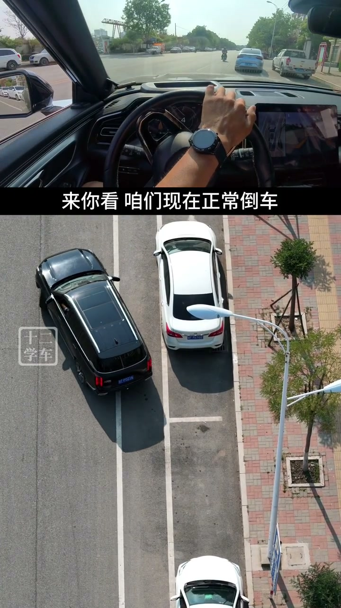

内容要点
这段视频围绕「XiaoHongShu video #68486d460000000021000893」展开，按时间介绍其中的关键环节。侧方停车进不去 应该怎么调整。
开场与主题引入
侧方停车进不去 应该怎么调整。你看 无非就两种情况。第一种 角度大了 车身偏离 车头背卡住。第二种 角度小了 车身偏外 后轮进不去。所以咱们今天就讲一下 应该怎么样去调整。好 讲之前咱们先了解一下 怎么样进最简单。来 靠近白车 观察幼稚后日镜。你看 镜子里能看到障碍点和枯位。让你的车尾朝着枯位的后半部分去倒车。其他的你不用管 什么回轮这些你不用去想

[00:00] 开场与主题引入相关画面。
Opening and theme-introduction footage.
核心操作步骤
然后反方向倒一点。这样的话 后轮是不会被拉出来的。你看 车身也就停挣了 侧方就是这么简单。即使说我们车身角度倒成了这个样子。只要后轮送到位 车前有空间。同样是右前方走一点 反方向倒一点。重复此操作 也就进空了。所以我们按照这个思路去做调整的话 就会非常简单。就一个目的 让你的车尾对着库尾的后半部分。来 你看 咱们现在正常倒车

[00:43] 核心操作步骤相关画面。
Footage of the core operation steps.
进阶设置与优化
后轮送到位 前面有空间。就可以右前方走一点 反方向倒一点。重复此操作 也就进空了。所以侧方的调整就是一个甩尾的过程。来 看一下车身偏外怎么办。倒进来之后 发现车身偏外。来 你现在想一下我们怎么做。才能让车尾对着库尾的后半部分。那肯定是往外打方向吗。车尾才能甩过来

[01:27] 进阶设置与优化相关画面。
Footage on advanced settings and optimization.
总结
后轮送到位 前面有空间。